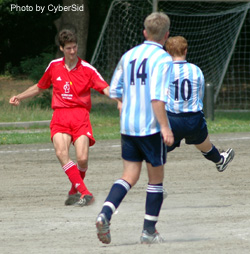
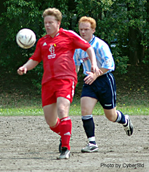
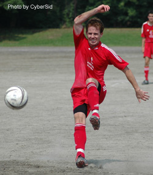
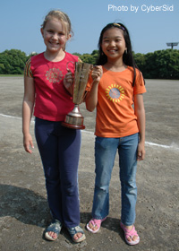

|  |
Captain Kirk makes another precision pass. |
Saturday afternoon at Oifuto, following a tense league match between the BFC & Sala, the final of the Cup between YCAC and the Swiss Kickers was played.
At the start, the Swiss seemed a little better off with 14 players to choose from and only Dave Pratt & Peter Pauli noticeable through their absences.
YCAC, on the other hand, was missing about 5
regulars and Captain Steve appeared to have searched far and wide for the bodies to make up the squad on the day. One of the noticeable replacements was the top scorer from the 2nd division KGFC team
starting off up front with Joe Takeda.
|  |
Leading goal scorer in both league & Cup Karl Hahne |
Once the game got started, the bigger pitch at Oifuto (vs. St. Mary's or YCAC) and the Swiss' familiarity with each other was a clear difference.
The reliable back four for the Swiss (Krando, Kirk, Trevor,
and Kai) were picking up most of the long balls by the YCAC defense and distributing it wide to Aoki and James who started sending in balls to Yuji and Angelo up front.
In the center, Dave Spiers was
shutting down Joe and really limiting any passing up to Tsuyoshi by the YCAC midfield. After 10 minutes, with a couple of missed chances, the Swiss brought on Karl Hahne to try and break the deadlock.
After being on the pitch for about 5 minutes, he received the ball at his feet, turned and fired a strong shot towards goal, it deflected off a defender and with the keeper stranded, bounced into the goal
for a 1-0 lead.
|  |
Dave Spiers, couldn't score in ......
his last match for the Swiss Kickers. |
After the first goal, the Swiss seemed to gain confidence and there were some nice moves from midfield with Suzuki, Aoki, James, JP, and Spiers all involved.
It was some good football with
the Swiss using all the width that Oifuto allows and really driving at the YCAC back 3 (after changing from 4 when Steve McKie subbed out). Angelo even had a bicycle/volley (not sure if he even knows what
it was) bounce off the cross bar.
There were a lot of chances for the Swiss but they were rewarded with a 2nd when Angelo took the ball to the end-line and crossed in for Karl to drive it home from 7 yards
out leaving the keeper no chance. Very nicely taken goal and a deserved 2-0 lead.
With this, the YCAC worked harder to try and get forward but the stubborn back four of the Swiss made it tough. Only a
few shots from distance by Joe or the other midfielders with only 1 testing Ohkubo in goal meant a 2-0 halftime lead.
|  |
"My dad won this" Mai Hahne & friend with the FJ Cup. |
The second half proved to be more of the same, solid work by the Swiss back four meant few opportunities for the YCAC and counters and possession in midfield meant more chances for the Swiss going forward.
Chances were squandered by virtually everyone – Mori, Angelo, Spiers, JP, Suzuki, Aoki, Kai but fortunately the Swiss defense held up. One danger moment with 10 minutes to go was Joe Takeda flashing
through to get a shot from a nice cross only for Trevor to get a touch to the ball to send it over the bar.
In the end, the stronger Swiss team showed enough quality to walk away with a deserved win
and the Cup for the 2nd year in a row.
Thanks to Quentin and the two linesmen for keeping it fair all day and thanks again to Sid & Paco for thier efforts to get the Cup and the league complete in
time for the league party on July 2nd!
Cap'n Kirk
|